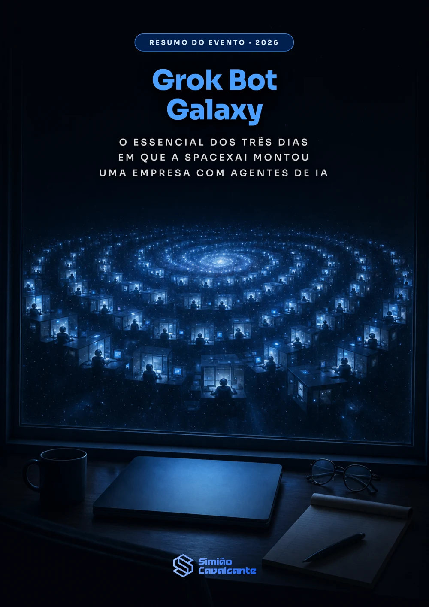

Quem estuda para concurso
Entende como ensinar uma tarefa uma única vez para que o agente repita a revisão a cada matéria, sempre preso ao material que você enviou.
Ebook gratuito · PDF · 23 páginas
O Grok Bot Galaxy foi a transmissão em que a SpaceXAI tentou montar uma empresa em três dias usando agentes de IA no lugar de funcionários. Este resumo em português separa o que foi explicado sobre o produto, o que foi construído ao vivo e o que serve para quem estuda ou trabalha com Direito.

O evento
Matt Palmer, Lauren Tan e Roshan Sadanani começaram numa terça com uma organização vazia no GitHub, tratando cada bot como funcionário. Escolha um dia para ver o que aconteceu no estúdio e no palco.
Por dentro do ebook
Passe o mouse ou toque num capítulo para ver a página de abertura. Cada um fecha em duas ou três páginas, com tabelas de consulta onde o conteúdo pede comparação.
Pontos-chave
Para quem é
Entende como ensinar uma tarefa uma única vez para que o agente repita a revisão a cada matéria, sempre preso ao material que você enviou.
Conhece os degraus de autonomia, do somente leitura ao somente rascunhos, antes de conectar qualquer caixa de e-mail ou sistema de trabalho.
Vê o que de fato foi mostrado nos três dias, com os tropeços incluídos, sem precisar assistir a vinte e cinco horas de vídeo em inglês.
Quem escreveu
Procurador do Município do Rio de Janeiro, professor e entusiasta de tecnologia, cursando MBA em Engenharia de Software pela USP e Master em Inteligência Artificial Generativa pela PUC-Rio. No YouTube e no Instagram, mostro como usar ferramentas de IA para estudar para concursos públicos com mais eficiência e para atuar com método.
Download direto
O arquivo abre em qualquer leitor de PDF, tem sumário, tabelas de consulta e os links das três transmissões originais no fim.
Baixar o ebook PDF · 1,2 MB